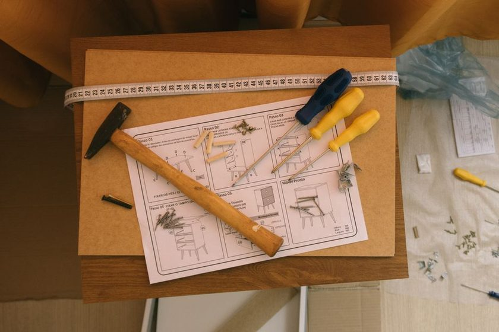

A flat-pack carcase is a chain of promises, one panel deep. Each shelf carries its own tolerance — the plus-or-minus the shop is willing to live with — and taken alone, none of it looks like a problem. Four-tenths of a millimeter here. Three-tenths there. No one would send a panel back over that. The trouble starts when five or six of those small, legal errors are asked to stand on top of one another and still meet a case that was drawn as if every panel were perfect. The arithmetic doesn't forgive; it accumulates. And the panel that pays for the whole run is always the last one in — the one with nowhere left to hide the difference.
What Tolerance Stacking Actually Means
Tolerance stacking, sometimes called tolerance accumulation, describes what happens when a series of individually acceptable dimensional errors are chained together along one axis of measurement. Cut a single shelf 0.3mm long and the case still closes. Cut five shelves that way, each measured off the one below it rather than off a fixed line, and the errors don't cancel out politely — they ride in the direction the setup was already leaning. A worn stop block, a fence that crept a hair between cuts, a batch of panels all sawn on the same slightly-off machine: none of these are random. They're systematic, and systematic errors stack, they don't average.
A Five-Shelf Case on the Bench
Picture a bookcase with five identical shelf panels, each with a nominal height of 320.0mm and a shop tolerance of ±0.4mm — a tolerance most cutlists would call generous. The panels came off one saw setup, cut back to back, and every one of them measured inside spec on its own. Here's what the batch looked like against a fixed datum line at the bottom of the case:
| Panel | Nominal Height | Tolerance | Actual Cut | Running Offset |
|---|---|---|---|---|
| 1 | 320.0mm | ±0.4mm | 320.3mm | +0.3mm |
| 2 | 320.0mm | ±0.4mm | 320.4mm | +0.7mm |
| 3 | 320.0mm | ±0.4mm | 320.2mm | +0.9mm |
| 4 | 320.0mm | ±0.4mm | 320.3mm | +1.2mm |
| 5 | 320.0mm | ±0.4mm | 320.1mm | +1.3mm |
Every single cut passed inspection. Not one panel exceeded its 0.4mm allowance. And the case still grew 1.3mm taller than drawn by the time the fifth shelf went in — more than three times what any one panel was permitted to contribute on its own.
Where the Error Hides Until It Doesn't
That 1.3mm doesn't announce itself on the shelves themselves. Each edge sits flush against the one below it; the joint looks clean at every stage of assembly. It shows up where the stack meets something that was never allowed to move — the case top, a door sized to the opening, a drawer front cut to a fixed reveal. That's the joint that absorbs the whole run's drift at once, and it's usually the joint nobody was watching, because every measurement up to that point looked fine in isolation.
No single shelf lied. The case did — one comfortable half-millimeter at a time.
There are two honest ways to add tolerances. Worst-case arithmetic assumes every error lands in the same direction and simply sums them — pessimistic, but the only safe assumption when every panel comes off the same setup. Statistical (root-sum-square) methods assume errors are independent and partly cancel — realistic for parts from different machines or different days, not for five shelves ripped in a row from one fence position. The shelf case above drifted rather than canceled because the source of error was systematic, not random. Knowing which situation you're in changes whether ±0.4mm per panel is actually safe at five panels deep.
The Fix: One Continuous Reference Line
Chain dimensioning — measuring each panel from the one before it — is what let the error compound in the first place. The fix isn't a tighter tolerance; it's a different reference. Pick one fixed edge, mark it once with a story stick or a marking gauge, and dimension every panel from that single line instead of from its neighbor. This is the same principle covered in Datum Faces and Why They Matter: a datum doesn't reduce how far any one cut can be off, but it stops those small errors from riding on each other's backs toward the last joint.
- Choose the datum edge before the first cut is made, not after the third panel is already out of square.
- Dimension every panel on the drawing from that one edge, never from the panel that precedes it.
- Cut all panels of the same nominal size in a single setup, at one fence position, so the reference doesn't shift mid-run.
- Check the running total against the datum at the last panel, not just each panel's own tolerance on its own.
What the Cutlist Has to Say
None of this holds up if the drawing itself is written as a chain. A cutlist that lists each shelf's height relative to the shelf below it is quietly asking for the same drift that showed up on the bench above. A cutlist written the way Reading the Cutlist Before You Touch the Saw describes — every dimension traced back to one reference — makes the stacking visible before the saw ever runs, instead of after the case is glued up and the door won't sit flush.
This article describes a general measurement principle common to batch woodworking and manufacturing drawing practice. The figures used here are illustrative, not a manufacturer specification, and nothing above should be read as instruction for a specific project, material, or machine setup.